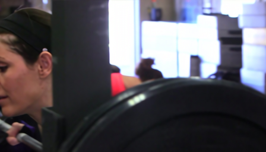
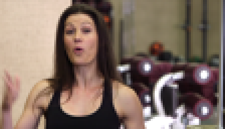
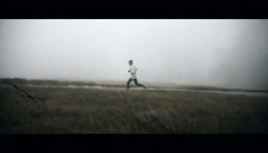
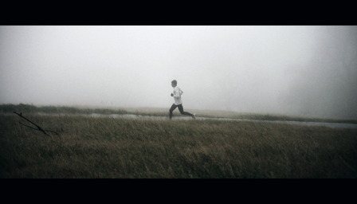
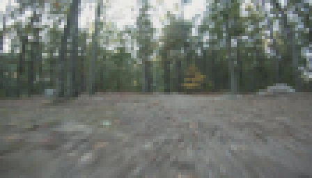
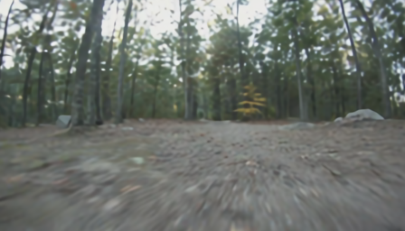
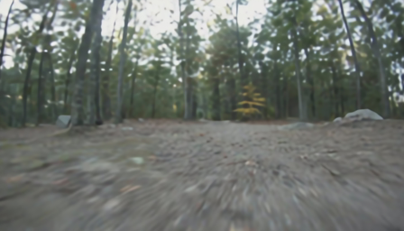

Show 1
Stage motion and screen detail
BasicVSR++ result video
FocusVSR trained risk-lap result
AIAA3201 Video Super-Resolution Project
Uncertainty-aware selective refinement for 4x video super-resolution
Video Testbed
Each source video is exported as a representative 35fps clip. The four panels are GT, generated 4x LR input, BasicVSR++ with the Vimeo90K-BI checkpoint, and our strongest presentation output from the trained risk-aware Laplacian FocusVSR path.
Only BasicVSR++ and Ours are kept as SR outputs on the page; older Real-ESRGAN, alpha-map, and HQ residual exports are removed from the final media bundle.
Show 1
Show 2
IMG 0115
IMG 0117
Wild Data
The controlled benchmark answers whether FocusVSR preserves paired-reference fidelity. The wild clips are for presentation: they show whether risk-aware local detail transfer gives useful visual detail while keeping BasicVSR++ as the structural anchor.
Mandatory Demo
The course handout asks for rendered top-down and egocentric videos. For our video super-resolution task, the top-down view is an overview panel containing LR input, BasicVSR++, Ours, and the local focus-detail map. The egocentric view is the full-frame output from our strongest trained risk-aware Laplacian FocusVSR path.
The full submission bundle is generated as navigation results.zip under extensions/focusvsr/runs/sample_demo/. The page shows representative clips from the same REDS-sample and Vimeo-LR rendering run.
REDS-sample
REDS-sample
vimeo-RL
vimeo-RL
vimeo-RL
vimeo-RL
Project Idea
Video super-resolution is not uniformly difficult across a frame. Large structural regions can be reconstructed reliably by a strong recurrent model, while specular highlights, text, water, screens, and fast motion often remain ambiguous. FocusVSR treats that ambiguity as a routing signal instead of applying the same refinement everywhere.
The current prototype keeps BasicVSR++ as the stable reconstruction path and adds a conservative refinement layer for high-frequency regions. The goal is to improve local perceptual detail without sacrificing the temporal stability and distortion metrics that make BasicVSR++ a strong baseline.
Method
Input frames are degraded to the target 4x VSR setting and processed as a temporal sequence.
Bidirectional propagation recovers a stable full-frame reconstruction and preserves global structure.
Residual cues, local detail energy, and temporal disagreement highlight regions that are likely under-restored.
The refinement branch is applied only to uncertain high-frequency areas, then blended back into the backbone output.
Flat backgrounds, rigid edges, and well-aligned structures stay close to the BasicVSR++ output to protect PSNR, SSIM, and temporal smoothness.
Text, lighting, crowd texture, water spray, and screen content receive more aggressive local refinement where perceptual errors are easiest to notice.
Qualitative Results
Cherry-picked Vimeo Test Examples
These examples are selected from the 50-clip Vimeo test split using per-clip LPIPS improvement over BasicVSR++. Each row shows LR, BasicVSR++, Ours, and GT.
Pick 1

Pick 2

Pick 3


Pick 4



Experiment Design
Vimeo is fixed to train 0:900, val 900:950, test 950:1000, and smoke 950:958. The final controlled table evaluates 50 test clips with zero failures. Wild videos are exported as 35fps presentation clips from show1, show2, IMG_0115, and IMG_0117.
BasicVSR++ with the official Vimeo90K-BI checkpoint is the anchor at 36.6977 Y-PSNR, 0.9525 Y-SSIM, 0.0856 LPIPS, and 48.6270 internal FID-50. Real-ESRGAN alone drops to 28.0246 Y-PSNR and 129.5927 FID-50, while CFM-clean reaches 30.2242 Y-PSNR and 149.9160 FID-50, so both are treated as candidates rather than final outputs.
The final table reports full-frame Y PSNR/SSIM, crop8 Y PSNR/SSIM, RGB PSNR/SSIM, LPIPS-Alex, tLPIPS when available, bootstrap 95% confidence intervals, and internal small-sample FID-50. FID is used only for within-table comparison.
The trained risk-aware Laplacian path reaches 36.6332 Y-PSNR, 0.9512 Y-SSIM, 0.0855 LPIPS, and 48.9614 FID-50. The heuristic risk-lap variant improves LPIPS slightly to 0.0848 but costs more PSNR. Oracle analysis shows Real-ESRGAN detail has little paired-fidelity upper-bound gain, so candidate quality remains the main bottleneck.
Benchmark Snapshot
Numbers use the final Vimeo test50 run with BasicVSR++ switched to the official Vimeo90K-BI checkpoint. Higher PSNR/SSIM is better; lower LPIPS/FID is better. FID is reported as internal FID-50, not a 50k-image generative benchmark.
| method | clips | failures | psnr_y_full_mean | psnr_y_full_ci95_low | psnr_y_full_ci95_high | ssim_y_full_mean | ssim_y_full_ci95_low | ssim_y_full_ci95_high | psnr_y_crop8_mean | psnr_y_crop8_ci95_low | psnr_y_crop8_ci95_high | ssim_y_crop8_mean | ssim_y_crop8_ci95_low | ssim_y_crop8_ci95_high | psnr_rgb_full_mean | psnr_rgb_full_ci95_low | psnr_rgb_full_ci95_high | ssim_rgb_full_mean | ssim_rgb_full_ci95_low | ssim_rgb_full_ci95_high | lpips_alex_rgb_mean | lpips_alex_rgb_ci95_low | lpips_alex_rgb_ci95_high | tlpips_alex_rgb_mean | tlpips_alex_rgb_ci95_low | tlpips_alex_rgb_ci95_high | fid_internal | fid_frames |
|---|---|---|---|---|---|---|---|---|---|---|---|---|---|---|---|---|---|---|---|---|---|---|---|---|---|---|---|---|
| basicvsrpp | 50 | 0 | 36.697677 | 35.078647 | 38.286885 | 0.952534 | 0.938397 | 0.964766 | 36.650814 | 35.035564 | 38.253666 | 0.951894 | 0.937854 | 0.964026 | 36.342577 | 34.776903 | 37.879227 | 0.949193 | 0.934993 | 0.961431 | 0.085555 | 0.065577 | 0.108519 | nan | nan | nan | 48.626977 | 50 |
| realesrgan | 50 | 0 | 28.024589 | 26.963476 | 29.094757 | 0.829407 | 0.803455 | 0.854055 | 27.970268 | 26.915800 | 29.035205 | 0.827598 | 0.801852 | 0.852327 | 27.543937 | 26.521968 | 28.566604 | 0.813142 | 0.787639 | 0.838256 | 0.163991 | 0.150785 | 0.178164 | nan | nan | nan | 129.592689 | 50 |
| cfm_clean | 50 | 0 | 30.224187 | 28.906946 | 31.524720 | 0.848171 | 0.821940 | 0.872737 | 30.209689 | 28.891280 | 31.515192 | 0.847433 | 0.821081 | 0.872292 | 29.442029 | 28.262178 | 30.596314 | 0.824522 | 0.799827 | 0.847590 | 0.218187 | 0.196261 | 0.241256 | nan | nan | nan | 149.916008 | 50 |
| focusvsr_risk_lap_realesrgan | 50 | 0 | 35.997855 | 34.507138 | 37.448099 | 0.948439 | 0.934351 | 0.960615 | 35.949149 | 34.466132 | 37.411371 | 0.947873 | 0.933919 | 0.960036 | 35.563815 | 34.139234 | 36.946726 | 0.942810 | 0.928832 | 0.954919 | 0.084804 | 0.065191 | 0.107162 | nan | nan | nan | 49.941805 | 50 |
| focusvsr_risk_lap_realesrgan_trained | 50 | 0 | 36.633173 | 35.023149 | 38.216446 | 0.951224 | 0.937032 | 0.963481 | 36.593464 | 34.984594 | 38.189363 | 0.950648 | 0.936631 | 0.962843 | 36.107091 | 34.586518 | 37.600733 | 0.945780 | 0.931734 | 0.957958 | 0.085491 | 0.065489 | 0.108492 | nan | nan | nan | 48.961353 | 50 |
Oracle Upper Bound
The oracle uses GT only for diagnosis, never for inference. It shows that patch/detail selection with Real-ESRGAN barely beats the BasicVSR++ anchor on PSNR, so the candidate is useful visually but not a strong paired-fidelity source.
| method | clips | psnr_y_full | ssim_y_full | psnr_y_crop8 | ssim_y_crop8 | psnr_rgb_full | ssim_rgb_full | lpips_alex_rgb |
|---|---|---|---|---|---|---|---|---|
| basicvsrpp | 50 | 36.69767682992679 | 0.9525339694781565 | 36.65081359944729 | 0.9518937053731881 | 36.342576701500455 | 0.9491932160190446 | 0.08555470898747444 |
| oracle_patch_choose_realesrgan_p16 | 50 | 36.66297274358685 | 0.9523572904151686 | 36.616073469332946 | 0.9517100093584535 | 36.297181143866794 | 0.948667159234991 | 0.08517663018777967 |
| oracle_patch_choose_realesrgan_p32 | 50 | 36.65655975100974 | 0.9522942652532518 | 36.609153820456044 | 0.9516551263112217 | 36.296428698809365 | 0.9487803122206147 | 0.08520345086231827 |
| oracle_detail_alpha_realesrgan_p16 | 50 | 36.695279949853905 | 0.9523138185464533 | 36.64534633916995 | 0.9516768964757887 | 36.15951874743398 | 0.9464242954223634 | 0.0844213697500527 |
| oracle_detail_alpha_realesrgan_p32 | 50 | 36.66284583728247 | 0.9521491610455499 | 36.61359468794153 | 0.9515113177299831 | 36.13291253594847 | 0.9462571596185623 | 0.08484456438571214 |
BasicVSR++ remains the strongest full-frame reconstruction anchor. The trained risk-aware Laplacian FocusVSR path is kept as the final selective-refinement presentation method because it stays close to the BasicVSR++ fidelity envelope while transferring only local Y-channel high-frequency detail.
Our FID is computed between paired SR outputs and GT frames using only 50 Vimeo frames or 80 wild frames. Because the sample count is tiny relative to Inception feature dimension, the value is useful for within-table ranking, not for comparison to large-scale 50k-image generative FID scores.
Current Takeaway
The final claim is intentionally conservative: BasicVSR++ remains the reliable global reconstruction path, while FocusVSR improves how refinement is routed. The current presentation variant keeps the backbone's low-frequency structure and selectively transfers high-frequency Y-channel detail using the trained risk head.
vimeo_test50_multimetric.csv with BasicVSR++ at 36.6977 Y-PSNR / 48.6270 FID-50 and trained FocusVSR at 36.6332 Y-PSNR / 48.9614 FID-50.